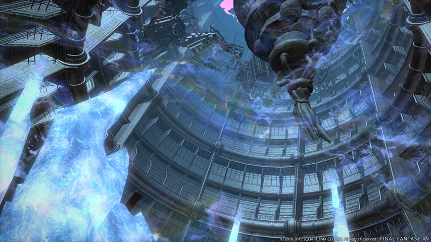
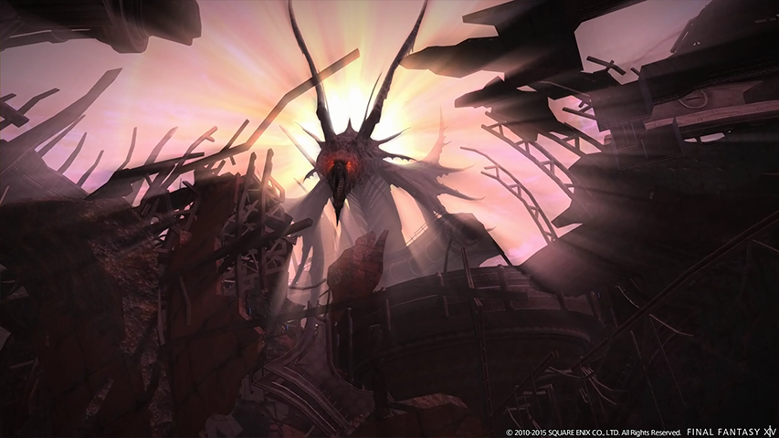

01 · 全場求生骨架

湖中的塔是帝國戰艦與幻龍殘骸交纏留下的遺跡。這堂從船體往塔頂走，依序處理油罐爆炸、魔導砲艇與幻龍的場地攻擊。
一王：看油罐
發紅的油罐即將爆炸；避開它們，也避開砲擊方向。
二王：看火線
離開噴火與飛行留下的火焰，增援出現就處理。
尾王：看安全區變化
內外圈、雙龍直線、同心圓與連續分攤，分開辨認再處理。
先辨認這次危險，再移到安全處，最後恢復攻擊或治療。
圈圈不都表示同一種機制：同心圓要等中央爆完切入，連續分攤則要留在隊友身邊。
02 · 路線與道中
- 船體入口清掉沿路敵人，抵達一王。
- 帝國軍防線清敵、回收認證鍵，操作終端解除屏障。
- 船體上層處理屏障內外的敵人，進入魔導砲艇戰。
- 通往塔頂清怪並避開落在地上的轟炸圈。
- 幻龍所在平台全隊到齊後開戰。
屏障前停住時
先確認敵人是否已清完、認證鍵是否拾取，以及終端是否仍可互動。屏障裡有大型魔導兵器時，先處理外面的敵人，再破壞屏障裝置，避免同時接進額外敵人。
道中不是無限大拉
坦克先建立整包仇恨，依隊伍承傷與輸出決定拉怪量；補師保持治療距離，DPS 協助快速清掉正在打隊伍的敵人。地上出現轟炸提示就先移開，不能為了追坦克踩過危險區。
NPC 可以提示戰鬥安全區，路線與機關仍要自己判斷。
找不到出口時開地圖、看任務目標與可互動物件。
03 · 一王：油罐與砲擊
一王的關鍵不是自己把油罐推到某個固定位置，而是辨認落下的油罐何時被引爆，以及砲擊朝哪裡打。敵人辨認：Einhander。
| 看到什麼 | 怎麼處理 |
|---|---|
| 油罐落地，部分發紅 | 發紅代表即將爆炸，與它拉開距離；第一批爆完後仍看下一批，不急著回原位。 |
| Boss 到場邊、準備砲擊 | 觀察它面向與地面範圍；離開直線。若中央出現距離衰減提示，遠離中央，同時避開會爆的油罐。 |
| 全隊一起掉血 | 這是團傷；治療恢復安全血線後繼續攻擊。 |
| 坦克強攻擊提示 | 坦克提前減傷，治療留意後續血量；其他人不與坦克重疊。 |
一次避招不是整套結束
先避第一批油罐，再確認有沒有新的發紅油罐與砲擊範圍。常見失誤是只看 Boss，沒有看場上物件；或一看到爆炸就立刻跑回尚未安全的地方。
04 · 二王：魔導砲艇
這場要同時看砲艇位置、地面火焰與新增敵人。Boss 移動時不要只跟著追，先找安全路徑。
| 看到什麼 | 怎麼處理 |
|---|---|
| 正面大扇形噴火 | 移到扇形外，等持續噴火結束再回去；不是只躲開第一下。 |
| 砲艇飛到邊緣、穿越場地 | 避開它飛行路徑留下的火焰；後續可能再接另一條，移動前再看一次。 |
| 腳下圓形轟炸提示 | 離開提示範圍，與旁邊火線一起判斷。 |
| 帝國軍／魔導先鋒增援 | 坦克接住仇恨，隊伍轉火清增援，減少補師持續承傷與治療壓力。 |
目標切換要跟上實際戰況
增援活著時，先把場面整理乾淨，不把「上次火力夠快直接打倒 Boss」當作固定打法。失誤後先離開火焰，再治療或復活，避免原地硬唱持續受傷。
05 · 尾王：幻龍

先辨認內外圈
| 看到什麼 | 怎麼處理 |
|---|---|
| Boss 前方寬直線 | 移到線外；不是站得夠遠就一定安全。 |
| Boss 周圍圓形危險區 | 離開 Boss 身邊。 |
| 外圈是危險區、Boss 附近留空 | 靠近 Boss，確認站在內側安全區。 |
| 外場兩隻不可選取的幻影龍 | 看它們的朝向，橫向離開兩條直線；同時檢查 Boss 的內外圈。 |
同心圓：先等，再切入
先在中圈待機；中央火焰／爆炸結束後，立即切進中央。
不要提早踏進仍在爆的中央，也不要等到下一圈爆了才開始移動。
看的是中央危險真正結束的時點，不把「厭惡」讀條當作同心圓固定計時器。站在預備位置時就先想好往中央的路，減少臨時判斷與橫向繞路。
可選取雙龍與能量條
Boss 不能被攻擊、雙龍變成可選取目標且能量條開始累積時，立刻轉火雙龍，趕在能量蓄滿前擊倒。這與外場只負責噴直線、不能選取的幻影龍是不同情境。
連續分攤：不要第一下就散
看到分攤標記就與隊友集合，連續傷害結束前保持集合。治療在連擊間恢復隊伍血量；分攤不是第一下打完就立刻各自回站位。
雙龍直線與內外圈會組合。
先確認自己的位置同時避開兩種危險，再恢復輸出；不要只處理其中一個提示。
06 · 五職能視角
| 看到什麼 | 怎麼處理 |
|---|---|
| 坦克 | 接住新增敵人、讓正面攻擊遠離隊伍。移動避招後重新穩定敵人位置，強攻擊前準備減傷。 |
| 治療 | 先移出危險再恢復血線；區分全隊團傷、坦克單體高傷與連續分攤，依傷害形態安排工具。 |
| 近戰 DPS | 油罐、火線與圈圈先處理，安全後再回近身。敵人不可選取時及時轉火，不對空目標連按。 |
| 遠程物理 DPS | 利用移動中能持續攻擊的優勢看清場地，仍要進入分攤與隊伍治療範圍，不一直站在最遠處。 |
| 遠程魔法 DPS | 在提示出現時預留移動窗口，提早選安全位置；必要時停唱避招，不用硬吃傷害換一個施法。 |
本堂建議載具：賢者 Lv.50
用熟悉的心關與蛇膽骨架承接內容判斷：平常保持攻擊，團傷前考慮防禦工具，連續分攤期間照顧隊伍；不要因為補血或想維持輸出而站在火焰裡。
要複習心關、蛇膽與 Lv.50 可用工具，回賢者職業講義查閱。
07 · 常見問題
- 一直盯王，油罐卻把我炸到？
- 把視線分給場上的油罐。每次砲擊後再確認哪些油罐發紅，不只看 Boss 讀條。
- 噴火提示躲了，為什麼回去還掉血？
- 噴火與地上火焰有持續時間。等危險真正結束再回去。
- 已躲雙龍，仍吃到尾王範圍？
- 那是組合機制。線外位置也要同時符合內外圈安全條件。
- 同心圓總是慢一步？
- 先在中圈靠近切入位置，看到中央爆完就移動；不要用另一個讀條推算移動時點。
- 尾王不能選取，還繼續點它？
- 改看可選取雙龍與能量條。轉火目標是機制的一部分。
- 分攤第一下後大家又掉血？
- 它是連續分攤。先保持集合、恢復血線，等連擊結束才分開。
08 · 回場速查
09 · 延伸閱讀
此頁採改版後的地面提示與雙龍處理方式。未確認的技能繁中專名以視覺描述教學，不使用舊版防護罩流程。